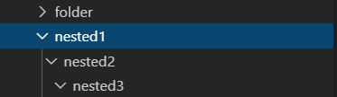

12386
Обработка файлов в Python с помощью модуля os включает создание, переименование, перемещение, удаление файлов и папок, а также получение списка всех файлов и каталогов и многое другое.
В индустрии программного обеспечения большинство программ тем или иным образом обрабатывают файлы: создают их, переименовывают, перемещают и так далее. Любой программист должен обладать таким навыком. С этим руководством вы научитесь использовать модуль os в Python для проведения операций над файлами и каталогами вне зависимости от используемой операционной системы.
Важно знать, что модуль os используется не только для работы с файлами. Он включает массу методов и инструментов для других операций: обработки переменных среды, управления системными процессами, а также аргументы командной строки и даже расширенные атрибуты файлов, которые есть только в Linux.
Модуль встроенный, поэтому для работы с ним не нужно ничего устанавливать.
Для
получения текущего рабочего каталога
используется os.getcwd():
importos# вывести текущую директорию("Текущая деректория:",os.getcwd())
os.getcwd() возвращает
строку в Юникоде, представляющую текущий
рабочий каталог. Вот пример вывода:
Текущая деректория: C:\python3\binДля создания папки/каталога в любой операционной системе нужна следующая команда:
# создать пустой каталог (папку)os.mkdir("folder")
После ее выполнения в текущем рабочем каталоге тут же появится новая папка с названием «folder».
Если
запустить ее еще раз, будет вызвана
ошибка FileExistsError,
потому что такая папка уже есть. Для
решения проблемы нужно запускать команду
только в том случае, если каталога с
таким же именем нет. Этого можно добиться
следующим образом:
# повторный запуск mkdir с тем же именем вызывает FileExistsError,# вместо этого запустите:ifnotos.path.isdir("folder"):os.mkdir("folder")
Функция os.path.isdir() вернет True,
если переданное имя ссылается на
существующий каталог.
Менять директории довольно просто. Проделаем это с только что созданным:
# изменение текущего каталога на 'folder'os.chdir("folder")
Еще раз выведем рабочий каталог:
# вывод текущей папки("Текущая директория изменилась на folder:",os.getcwd())
Вывод:
Текущая директория изменилась на folder: C:\python3\bin\folderПредположим, вы хотите создать не только одну папку, но и несколько вложенных:
# вернуться в предыдущую директориюos.chdir("..")# сделать несколько вложенных папокos.makedirs("nested1/nested2/nested3")
Это создаст три папки рекурсивно, как показано на следующем изображении:

Для создания
файлов в Python модули
не нужны. Можно использовать встроенную
функцию open().
Она принимает название файла, который
необходимо создать в качестве первого
параметра и желаемый режим открытия —
как второй:
# создать новый текстовый файлtext_file=open("text.txt","w")# запить текста в этот файлtext_file.write("Это текстовый файл")
w значит
write (запись), a —
это appending (добавление данных к уже
существующему файлу), а r —
reading (чтение). Больше о режимах открытия
можно почитать здесь.
С помощью модуля os достаточно просто переименовать файл. Поменяем название созданного в прошлом шаге.
# переименовать text.txt на renamed-text.txtos.rename("text.txt","renamed-text.txt")
Функция os.rename() принимает
2 аргумента: имя файла или папки, которые
нужно переименовать и новое имя.
Функцию os.replace() можно
использовать для перемещения файлов
или каталогов:
# заменить (переместить) этот файл в другой каталогos.replace("renamed-text.txt","folder/renamed-text.txt")
Стоит
обратить внимание, что это перезапишет
путь, поэтому если в папке folder уже
есть файл с таким же именем (renamed-text.txt),
он будет перезаписан.
# распечатать все файлы и папки в текущем каталоге("Все папки и файлы:",os.listdir())
Функция os.listdir() возвращает
список, который содержит имена файлов
в папке. Если в качестве аргумента не
указывать ничего, вернется список файлов
и папок текущего рабочего каталога:
Все папки и файлы: ['folder', 'handling-files', 'nested1', 'text.txt']
А
что если нужно узнать состав и этих
папок тоже? Для этого нужно использовать
функцию os.walk():
# распечатать все файлы и папки рекурсивноfordirpath,dirnames,filenamesinos.walk("."):# перебрать каталогиfordirnameindirnames:("Каталог:",os.path.join(dirpath,dirname))# перебрать файлыforfilenameinfilenames:("Файл:",os.path.join(dirpath,filename))
os.walk() —
это генератор дерева каталогов. Он будет
перебирать все переданные составляющие.
Здесь в качестве аргумента передано
значение «.», которое обозначает верхушку
дерева:
Каталог:.\folderКаталог:.\handling-filesКаталог:.\nested1Файл:.\text.txtФайл:.\handling-files\listing_files.pyФайл:.\handling-files\README.mdКаталог:.\nested1\nested2Каталог:.\nested1\nested2\nested3
Метод os.path.join() был
использован для объединения текущего
пути с именем файла/папки.
Удалим созданный файл:
# удалить этот файлos.remove("folder/renamed-text.txt")
os.remove() удалит
файл с указанным именем (не каталог).
С
помощью функции os.rmdir() можно
удалить указанную папку:
# удалить папкуos.rmdir("folder")
Для
удаления каталогов рекурсивно необходимо
использовать os.removedirs():
# удалить вложенные папкиos.removedirs("nested1/nested2/nested3")
Это удалит только пустые каталоги.
Для
получения информации о файле в ОС
используется функция os.stat(),
которая выполняет системный вызов stat() по
выбранному пути:
open("text.txt","w").write("Это текстовый файл")# вывести некоторые данные о файле(os.stat("text.txt"))
Вывод:
os.stat_result(st_mode=33206, st_ino=14355223812608232, st_dev=1558443184, st_nlink=1, st_uid=0, st_gid=0, st_size=19, st_atime=1575967618, st_mtime=1575967618, st_ctime=1575966941)Это вернет кортеж с отдельными метриками. В их числе есть следующие:
st_size —
размер файла в байтах
st_atime —
время последнего доступа в секундах
(временная метка)
st_mtime —
время последнего изменения
st_ctime —
в Windows это время создания файла, а в
Linux — последнего изменения метаданных
Для получения конкретного атрибута нужно писать следующим образом:
# например, получить размер файла("Размер файла:",os.stat("text.txt").st_size)
Вывод:
Размер файла: 19На этой странице больше об атрибутах.
Работать
с файлами и каталогами в Python очень
просто. Не имеет значения даже используемая
операционная система, хотя отдельные
уникальные для системы функции можно
использовать: например, os.chown() или os.chmod() в
Linux. Более подробно эта тема освещена в
официальной документации Python.